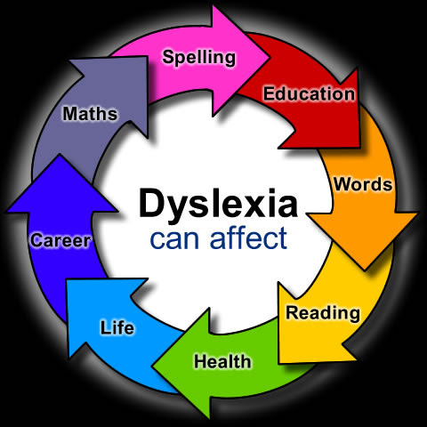

As defined by the Mayo Clinic, dyslexia is a learning disability that causes difficulty in reading due to complications in speech sounds and setbacks in the relationship between letters and words. There are five main branches of dyslexia: Phonological, Rapid Naming, Double Deficit, Surface, and Visual.

5 Main Types of Dyslexia
1. Phonological Dyslexia
Phonological Dyslexia is characterized by the struggle with recognizing and manipulating sounds of words. Individuals face issues with phonemic awareness, which causes difficulties in reading, writing, and spelling.
2. Rapid Naming Dyslexia
Rapid Naming Dyslexia is characterized by difficulty with the ability to rapidly identify numbers, letters, or colors. This form of dyslexia affects individuals' reading speed and how quickly they process words and sentences.
3. Double Deficit Dyslexia
Double Deficit Dyslexia is a combination of Phonological and Rapid Naming Dyslexia. It is known as the most severe form, as individuals struggle with both identifying sounds and rapid naming.
4. Surface Dyslexia
Surface Dyslexia involves the ability to sound out new words but failure to recognize familiar words automatically. It is caused by the brain's failure to quickly process and identify words, especially those that don't follow typical spelling rules.
5. Visual Dyslexia
Visual Dyslexia is characterized by the inability to remember words, sentences, patterns, colors, or shapes. The connection between the eyes and the brain does not work together properly, impairing an individual's ability to learn to spell and form letters.
What Are Two Common Misconceptions About Dyslexia?
One of the most common misconceptions about dyslexia is the relationship between dyslexia and intelligence. Many believe that individuals with dyslexia are unintelligent, but this is untrue. Dyslexia does not affect intelligence, and many individuals with dyslexia are extremely bright and creative. For example, Bill Gates is one of the smartest and most creative men in the world, despite his learning disability. He created Microsoft, which is now worth $3.065 trillion.
Another misconception is that an individual can grow out of dyslexia. In reality, dyslexia is a lifelong condition, but with the right teaching methods, practice, and reinforcement, individuals can manage its effects. Specialized programs provide structured learning strategies that help dyslexic students improve their reading, writing, and comprehension skills.